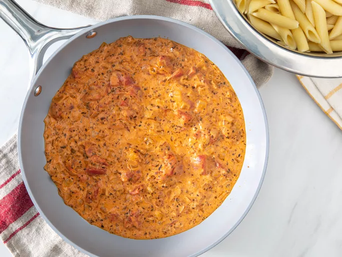

"Cream Sause for Pasta"

"Description"
Iw will be love at first bite when you try this absolutely decadent tomato-cream sauce for pasta. With a rich texture and an irresistible flavor, this creamy tomato pasta sauce is sure to please everyone at your dinner table. Get the Allrecipes community favorite recipe, as well as serving and storage tips, right here.
Ingredients
- Onion and Garlic
- Canned Tomatoes
- Spices and Seasonings
- Heavy Cream
Steps
- Cook onions over medium-heat in olive oil until translucent, then stir in garlic.
- Add tomatoes, basil, sugar, oregano, salt, and pepper. Boil until the tomatoes have cooked down and most of the ingredients have evaporated.
- Remove the pan from heat, then stir in cream and butter. Return to the stove and simmer for about 5 minutes.
"Home"